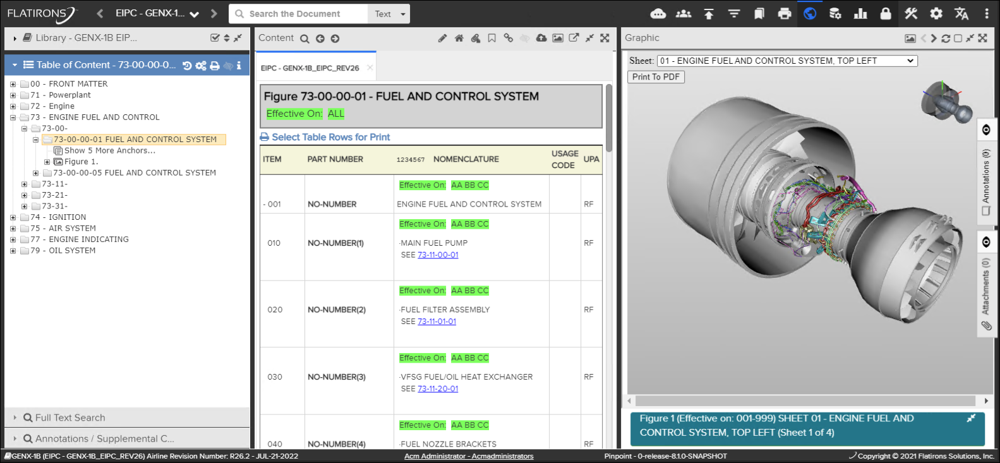
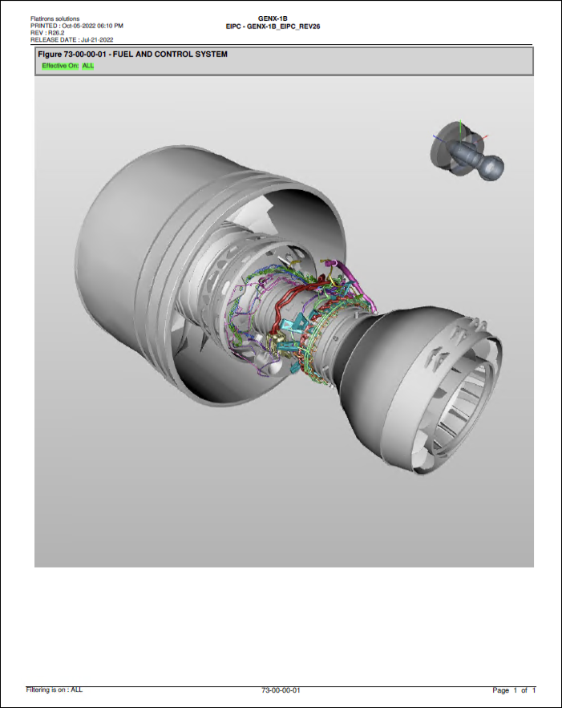

When viewing a 3D model, the user has the option to print out the current rendition of the
3D model with use of the
"Print To PDF" button on the graphics panel. Refer to the
example below:

3D Graphic for Print to PDF
A generated PDF file will be downloaded with header and footer information. Refer to the
example below:

3D Graphic PDF
Note: The default resolution and aspect ratio of the 3D rendition is 1024px by 1024px.
These values can be configured by a system administrator to provide better renditions on
landscape printouts or on portrait printouts. Please refer to "Configure Print 3D Media
Resolution" in the Flatirons Pinpoint Configuration Guide for more
details.